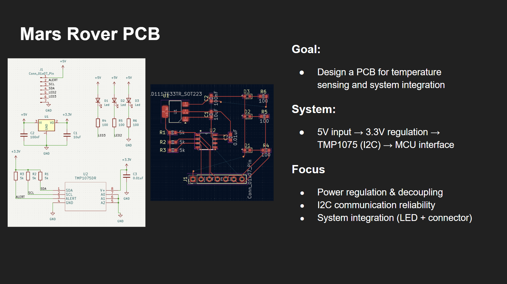
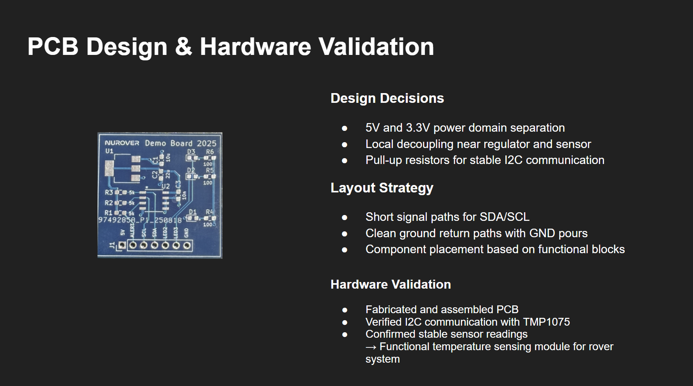

Goal
Design a PCB for temperature sensing and system integration that could interface cleanly with a larger rover platform.
Project Detail
A temperature sensing PCB designed for rover system integration, built around 5V input, 3.3V regulation, TMP1075 I2C communication, and hardware validation through fabrication and testing.
Design a PCB for temperature sensing and system integration that could interface cleanly with a larger rover platform.
This project focused on creating a practical sensor board for rover integration rather than only a standalone electronics exercise. The design needed stable power regulation, reliable I2C communication, and a layout that made sense as part of a larger physical system.
The board included both sensing and interface elements, which made component placement and system organization important from the beginning of the design process.


The layout was shaped around signal integrity and system readability. That meant keeping the communication path clean, maintaining sensible spacing around power components, and grouping parts according to their function in the rover system.